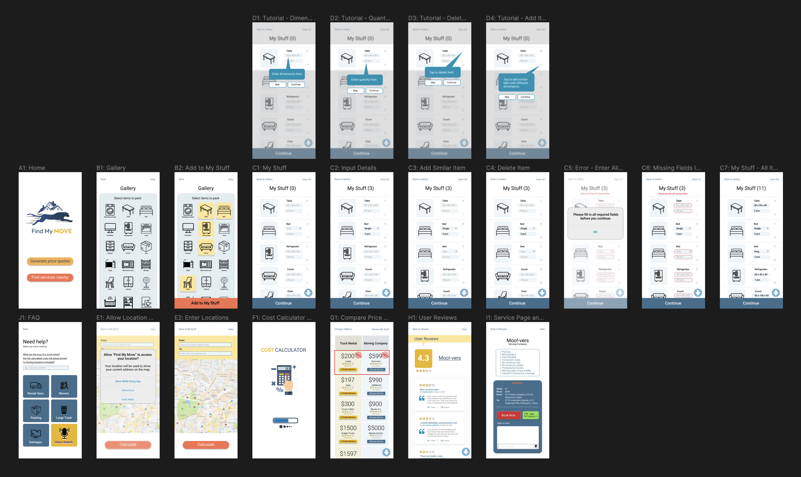
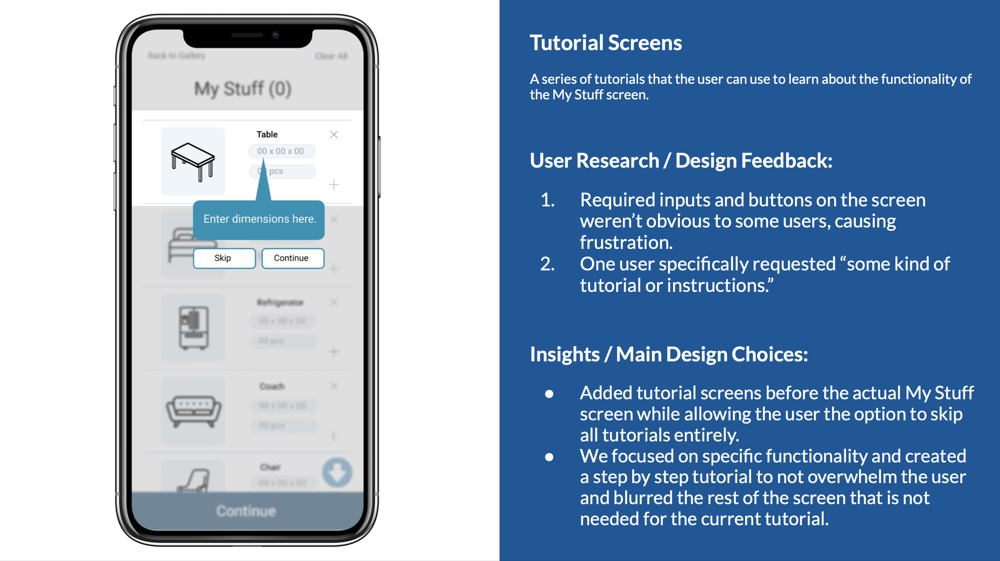

My team designed a mobile app, Find My Move, to address the challenges associated with moving.
The process of moving can be frustrating due to the difficulty in finding reliable services,
obtaining accurate cost estimates, and managing logistics. To alleviate these issues, our app
generates cost estimates for moving items and provides a list of services tailored to the user’s
budget. It also includes a peer review feature to help users select the most reliable services.
To ensure the app meets user needs, we conducted interviews with individuals who had experienced
moving. These interviews helped us identify the main challenges movers face and the features the
app should include. We presented our design concepts in different formats and received a mix of
positive and negative feedback. Some aspects of the design were unclear to the reviewers, and one
team member received no feedback on his user feedback functionality. This feedback guided us in
refining our design.
After selecting a concept that offered the best user experience, we expanded it by adding more
screens and states. We then conducted two sets of tests on this improved prototype: expert
evaluations and user tests. Two team members performed heuristic evaluations, and we recruited
users from our target group for user tests. These tests provided valuable insights that helped us
further improve the user experience of Find My Move.
Find My Move
Apartment Mover Mobile App

Screen Flow Mockup
